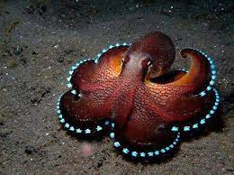

Welcome to the page that is about one of my personal favorite types of octopuses, the Coconut Octopus. This octopus is absolutely beautiful with its dark redish brown coloring and light colored suckers. This octopus gets it name because of the fact that it carries around coconut shells for shelter and protection.
